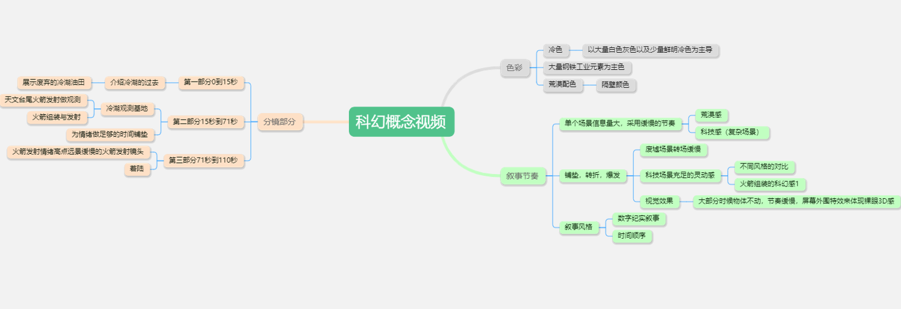
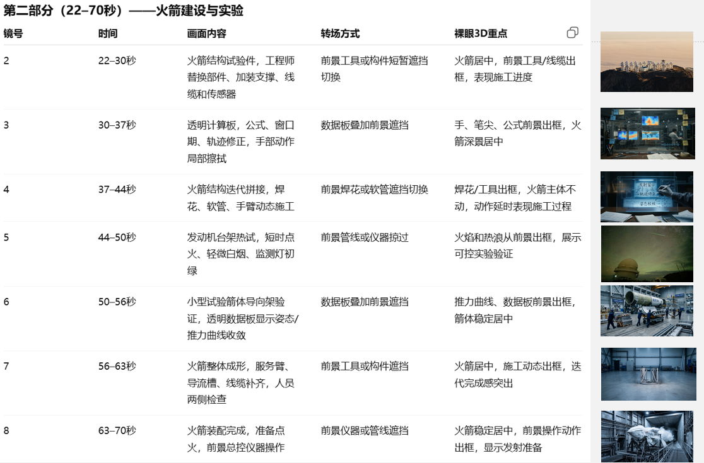
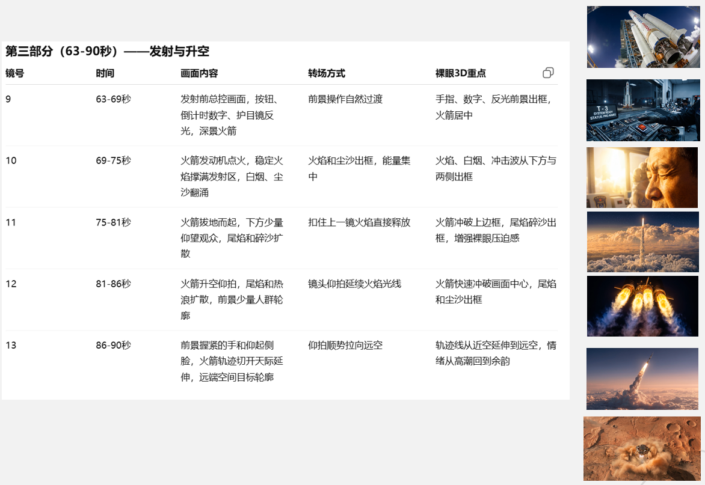
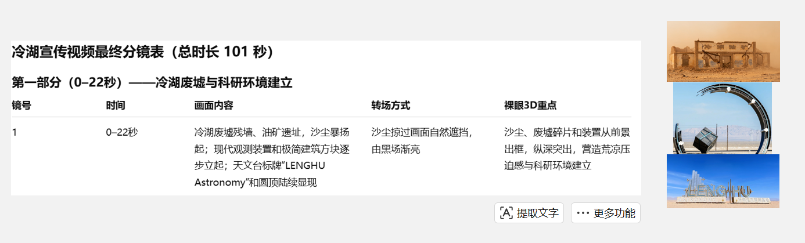
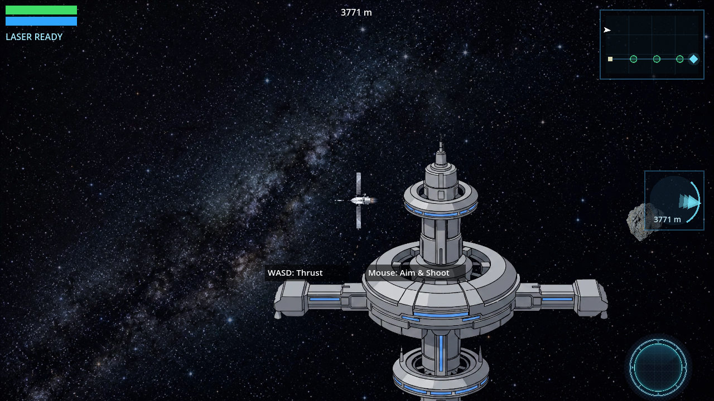

北京工业大学耿丹学院 · 数字媒体艺术 · 大三
用 AI 重新定义创作流程
数字化叙事与视觉呈现设计
从零开始拆解冷湖天文台项目：研究背景 → 技术路线 → 视觉方向。用思维导图把模糊需求变成可执行的模块。

项目整体概览
UE5 + C4D 技术路线
视觉风格与叙事结构设计「黑夜到黎明」的叙事弧线：夜空抵达 → 望远镜观测 → 破晓过渡 → 日出时的沙漠全景。8个分镜帧规划宣传片的每一秒。

分镜：黑夜 → 天文台 → 日出（8帧叙事）使用 Kling AI 生成视频素材。通过反复调整提示词控制画面推进速度、构图和光影效果。
画面向前推进，穿过冷湖沙漠地貌， 天文观测基地的建筑轮廓在夜色中逐渐清晰， 星空背景，银河可见， 镜头语言：缓慢推轨 + 微俯角
AI 驱动的完整游戏开发管线

惯性漂移物理、鼠标瞄准射击、3层视差星空、小行星带渐进密度、 安全区检查点、空间站停靠胜利。全部代码、素材、测试由 AI 辅助完成。
自然语言描述玩法 → AI 生成完整设计文档（12章）
PLAN / STRUCTURE / SCENES 三层文档自动分解
20 个 Worker 子代理并行编码，每批自动集成测试
228 个测试 55 秒全量通过，E2E 模拟真实按键
设计一款自上而下的太空探索射击游戏。核心玩法：惯性漂移(WASD) + 鼠标瞄准射击。3层视差星空背景，小行星带密度从5-10递增到30-50。空间站出发 → 穿越小行星带 → 到达目的地 → 返回停靠 = 胜利
参照这张图的风格氛围，生成原创深空主题背景。不要文字不要UI，不要抄袭构图，保持宇宙深邃感和星云色调
用清晰的提示词和结构化框架驱动 AI 协作
不是 "做一个游戏"，而是把玩法、物理、UI、场景逐层拆解。GDD 从需求到验收标准 12 个章节全覆盖。
PLAN / STRUCTURE / SCENES 三层文档把模糊需求变成可并行执行的任务树。每个 worker 拿到的是一份完整 brief。
Kling + 提示词迭代，控制画面推进速度、光影和构图。分镜规划 → 逐帧提示词 → 反复调优。
228 个测试自动运行，截图对比画面变化，不靠肉眼检查。每次改动 55 秒出全量结果。
| 环节 | 传统方式 | AI 增强 |
|---|---|---|
| 游戏策划文档 | 2-3 天 | 1.5 小时对话 |
| 视频宣传片 | 团队拍摄 1-2 周 | Kling 生成 + 后期 1 天 |
| 19 个系统编码 | 2-3 周 | 4 批次并行 |
| 26 个游戏素材 | 外包 1-2 周 | nanobanana 1 小时 |
北京工业大学耿丹学院数字媒体艺术专业大三在读。
核心能力不是写代码，而是把需求拆成 AI 能理解的粒度，用清晰的提示词和结构化框架驱动多代理协作。
从游戏开发到三维可视化到 AI 视频生成，一套方法论贯穿所有项目。